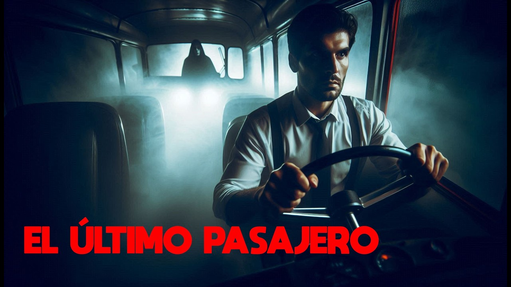

El Pasajero del Asiento Trasero
Conducía solo por la carretera cuando noté algo en el espejo retrovisor. Una figura sentada detrás de mí... inmóvil.
Desplegar relato completo...
Aceleré el paso intentando autoconvencerme de que era una ilusión óptica provocada por las luces de la autopista desierta. Sin embargo, al mirar de nuevo, sus ojos fijados en mi nuca brillaban con un matiz inhumano. Quise frenar, pero mis pies no respondían; el frío dentro del auto se volvió insoportable y el olor a tierra húmeda inundó la cabina. Justo cuando la figura comenzó a inclinarse lentamente hacia mi oído para susurrar mi nombre, el despertador sonó... o al menos eso quiero creer, porque sigo viendo la misma silueta cada vez que parpadeo frente al espejo.

Susurros en el Sótano
Cada noche escucho pasos bajo la casa… pero no tengo sótano.
Desplegar relato completo...
Al principio eran crujidos leves, como si la madera vieja de los cimientos cediera ante el peso de los años. Pero pronto los ruidos se transformaron en arañazos rítmicos contra las tablas del suelo, seguidos de murmullos ahogados que parecen pronunciar palabras en un idioma antiguo e incomprensible. Una noche, desesperado por el insomnio, pegué el oído directamente a las uniones del parquet. Desde el subsuelo, donde solo debería haber tierra maciza, una voz infantil y rasgada respondió con total claridad a mi propia respiración: "Gracias por escucharnos, ya casi terminamos de excavar hacia arriba".

La Sombra que Sonríe
Mi sombra ya no me sigue… ahora me observa.
Desplegar relato completo...
Todo comenzó cuando apagué la luz de la lámpara de noche y la silueta reflejada en la pared de mi habitación tardó dos segundos enteros en reaccionar a mi movimiento. Al día siguiente, la conexión se hizo total. Mientras camino por el pasillo, noto de reojo cómo su silueta se deforma en la pared adoptando posturas que yo jamás he hecho. Lo peor ocurre al caer la noche: cuando me acuesto en la cama completamente inmóvil, distingo perfectamente en la penumbra cómo su rostro plano y oscuro se estira artificialmente, revelando una hilera de dientes afilados hechos de pura oscuridad que no para de sonreírme desde el techo.

El Reflejo Retrasado
Me estaba lavando la cara a medianoche cuando me di cuenta de algo terrible. Mi reflejo terminó de secarse los ojos un segundo después que yo.
Desplegar relato completo...
Me quedé petrificado, con la toalla aún en las manos. Miré fijamente al vidrio y, por unos instantes, mi copia exacta imitó cada uno de mis movimientos a la perfección. Pensé que el cansancio me estaba jugando una mala pasada, pero cuando di media vuelta para salir del baño, alcancé a ver a través del cristal cómo mi reflejo permanecía de pie, completamente inmóvil, observando mi espalda con una expresión de odio absoluto. Desde entonces, evito mirar cualquier superficie que brille; tengo la constante sospecha de que el que está atrapado del otro lado está esperando el más mínimo descuido para cambiar de lugar conmigo.

La Notificación de las 3:33
Una aplicación desconocida apareció instalada en mi teléfono. Solo me envía un mensaje cada noche: "Te veo desde el armario".
Desplegar relato completo...
Al principio creí que se trataba de un virus informático o de una broma pesada de mal gusto de mis amigos. Borré la aplicación tres veces, pero al llegar la madrugada volvía a estar ahí, parpadeando en la pantalla negra. Ayer por la noche, harto de la situación, decidí responder al mensaje escribiendo: "Deja de molestar". La respuesta tardó apenas un segundo en llegar, acompañada de una fotografía borrosa tomada desde el interior de mi armario oscuro, apuntando directamente hacia mi cama. El mensaje de texto que acompañaba a la imagen decía: "Abre la puerta, hace frío aquí dentro".

La Llamada de mi propio Número
Mi teléfono comenzó a sonar a las dos de la mañana. La pantalla mostraba que el remitente de la llamada era mi propio número telefónico.
Desplegar relato completo...
Atendí por pura curiosidad morbosa, pensando que se trataba de algún truco de clonación de tarjetas SIM. Al pegar el dispositivo a mi oído, solo escuché una respiración agitada y un llanto ahogado atrapado en pura estática. Estaba a punto de colgar cuando una voz idéntica a la mía, pero rota por el pánico puro, suplicó desde el otro lado: "Por favor, tranca la puerta principal ahora mismo, ya entró a la casa". Antes de que pudiera procesarlo, escuché el crujido metálico de la cerradura de mi propia sala de estar abriéndose lentamente en el piso de abajo.

El Vecino de Arriba
Llevo semanas escuchando el arrastrar de muebles pesados en el piso de arriba. Hoy descubrí que el departamento superior ha estado deshabitado por años.
Desplegar relato completo...
Hablé con el conserje del edificio para quejarme del ruido insoportable que ocurría puntualmente a las 4:00 AM. Su rostro se puso pálido cuando me aseguró que los dueños anteriores fallecieron allí dentro en extrañas circunstancias y que nadie ha rentado el lugar desde entonces. Esa misma noche los ruidos regresaron, pero esta vez no eran muebles. El sonido cambió a pisadas pesadas y descalzas que caminaban en círculos perfectos justo encima de donde está mi cama, deteniéndose de golpe exactamente sobre el lugar donde coloco mi cabeza para dormir.

La Foto en la Galería
Estaba revisando las fotos de mi teléfono para borrar archivos duplicados. Encontré una imagen mía durmiendo profundamente, tomada desde el techo.
Desplegar relato completo...
La fecha y los metadatos del archivo indicaban que se tomó a las 3:14 AM de la noche anterior. Vivo completamente solo en un tercer piso y todas mis ventanas estaban aseguradas por dentro. Lo que me heló la sangre no fue solo el hecho de saber que alguien estuvo flotando sobre mí en la oscuridad, sino que al hacerle zoom a la esquina inferior de la fotografía, se alcanzaban a distinguir unos dedos extremadamente largos y grisáceos sosteniendo los bordes de la sábana de mi cama.

El Ascensor que no Para
Subí al ascensor de mi oficina rumbo al primer piso para irme a casa. El panel digital marcó el piso -7... aunque el edificio solo tiene 3 sótanos.
Desplegar relato completo...
Las luces comenzaron a parpadear y el cubículo descendió a una velocidad alarmante. Presioné desesperadamente el botón de emergencia, pero el sistema de comunicación solo emitía un zumbido ensordecedor. Cuando las puertas finalmente se abrieron con un chirrido pesado, no había pasillos ni oficinas; solo se extendía un túnel de piedra interminable, iluminado por una luz rojiza y un olor penetrante a azufre. Justo antes de que las puertas intentaran cerrarse para atraparme ahí, vi decenas de siluetas sin rostro corriendo a gran velocidad hacia el ascensor.

La Muñeca de la Abuela
Heredé una antigua muñeca de porcelana victoriana tras el funeral de mi abuela. Ayer la guardé bajo llave en el baúl del ático, pero hoy desperté con ella a mi lado.
Desplegar relato completo...
Estaba sentada en la almohada contigua a la mía, mirándome fijamente con sus ojos de vidrio sin vida. Fui corriendo al ático pensando que alguien me estaba jugando una broma, pero el candado del baúl seguía intacto y cerrado por fuera. Al regresar a mi habitación para tirarla a la basura, noté que la ropa de encaje de la muñeca estaba cubierta de polvo fresco del ático y que sus manos de porcelana, antes frías, ahora tenían una temperatura idéntica a la del cuerpo humano.